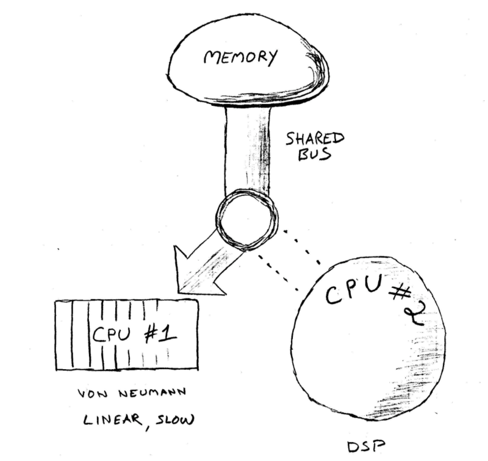

This isn't neuroscience
And I am no neuroscientist
Your brain is a little like a computer

L-Mode
Linear
Von-Neuman
R-Mode
Rich
Powerful
Pattern Matching
Async
Capture R mode
Go for a walk (preload)
Paper and Pencil
Organise, Categorise and Refactor